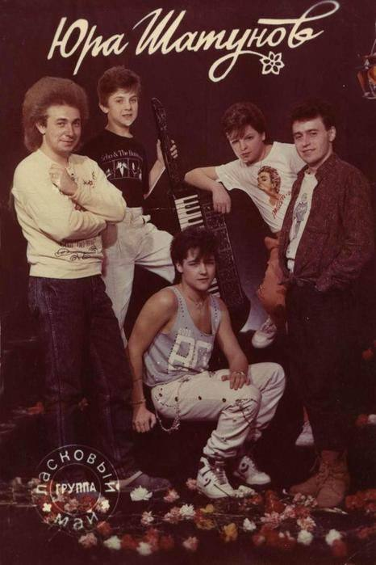
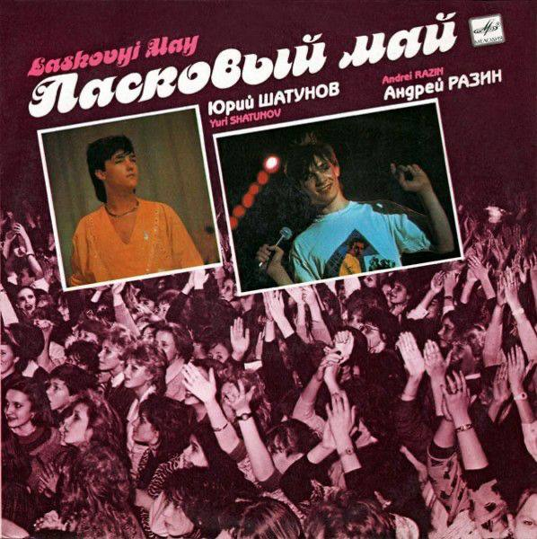

История создания знаменитого коллектива начиналась в российской глубинке. Тогда, в 1986 году, у Кузнецова уже были на руках будущие хиты «Ласкового мая»: «Маскарад», «Встречи», «Вечер холодной зимы». Молодой человек, увлеченный музыкой, написал их, пока служил в армии. Вместе с учеником интерната Вячеславом Пономаревым Кузнецов собирался создать группу, но требовался вокалист. Осенью руководителем учреждения назначили Валентину Тазикенову. До этого работник образования руководила детдомом в поселке Акбулак. За год до перевода в Оренбург она попала в состав комиссии, решавшей судьбу 12-летнего Юры Шатунова. Поначалу распевание слезливых песен интересовало подростка куда меньше, чем спорт. Песни, которые позднее будут петь стадионы, впервые прозвучали на новогодней дискотеке в интернате в декабре 1986 года. Название группы так и не было придумано — оставили рабочую версию «Ласковый май».
Новаторство коллектива заключалось не только в стилистике творчества, но и в его ориентации. Уже во время первых гастролей, осенью 1988 года, стало ясно, что главные поклонники «Ласкового мая» — школьники, пришедшие на концерт без родителей. Простые и эмоциональные тексты Кузнецова кардинально отличались от идеологически выдержанного советского творчества для молодежи, а музыка была так похожа на энергичные западные хиты. «Неформатность» подчеркивал и скандальный для того времени внешний вид музыкантов: наброшенные на голое тело джинсовки, макияж и безумные прически. Это стоило артистам эфиров на радио и ТВ, но к концу первого тура стало очевидно: они обойдутся и без традиционных инструментов умирающей системы. В октябре 1988 года на студии «Рекорд» вышел первый сборник, предсказуемо названный «Белые розы». До конца года ребята выпустили еще три. СМИ не могли игнорировать их растущую популярность и ставили в эфир клип на заглавную композицию с дебютной пластинки.В следующем году группа выпустила семь альбомов, в том числе «Розовый вечер» с хитами «Пусть будет ночь», «Седая ночь» и пр. Сергея Кузнецова не устраивала моральная обстановка в коллективе, и он решил создать собственный проект — группу «Мама» с солистом Александром Прико. Новый коллектив даже записал дебютный диск «Розовый вечер», но в продажу сборник вышел как шестой альбом «Ласкового мая». Разин воспользовался минусовой фонограммой Кузнецова и записал композиции с голосом Шатунова. Не желая платить гонорар за песни, продюсер на всю страну назвал композитора рэкетиром, который запросил у «бедных детей-сирот» 100 тыс. рублей. В 1990 году на пяти альбомах издается новый материал. Год спустя прошел тур по американским городам. А в начале 1992 года деятельность группы прекратилась.
Первая кассета "Ласкового мая" стоила 30 рублей. Деньги же от ее продажи пошли на достаточно странные вещи. Казалось бы, их стоило пустить на продвижение коллектива. Однако на них был приобретен целый ящик мороженного и пара дешевых часов. Одни из них презентовали солисту Юре Шатунову, которые певец хранит по сей день. Удивительно, но на первых порах продюсер бэнда Разин запретил осуществлять фото- и видеосъемку ребят. В результате по стране начали гастролировать лже-группы, решившие заработать таким способом денег. Правда длилось это недолго. О мошенничестве узнала пресса и потихоньку начал назревать скандал. Тогда в официальном формате появились дубликаты коллектива, их было около 2-х десятков, которые под афишей "Студия "Ласкового мая" разъезжали по стране с концертами. Накануне 1990 Нового года группа успела дать 13 концертов с аншлагом, и не где-то, а в самом крупном комплексе "Олимпийский". Причем их могло было быть и больше, только даже активные подростки не осилили бы подобного темпа. Участникам группы приходилось сторониться своих коллег по цеху. И дело не в высокомерии. Разин попросту им запрещал общаться с более старшими знаменитостями, опасаясь, что те "испортят" молодых парней. Относительно контактов с поклонницами тоже было все строго. И причиной тому стала безграничная и весьма неадекватная любовь фанаток. Сколько поклонниц "Ласкового мая" в то время пыталось свести счеты с жизнью! Да и сам Разин не раз бегал от ополоумевших, причем солидных по возрасту, дам, которые старались доказать, что именно они являются матерьми сироты Юры. Точной версии, почему распался коллектив, нет. Шатунов же на этот факт имеет свое мнение. По его словам, что пока участники бэнда не достигли совершеннолетия, делали все то, что им говорили : записывали композиции, гастролировали и работали в поте лица. Когда же смогли решать самостоятельно, поняли, что настало время жить собственной жизнью.
